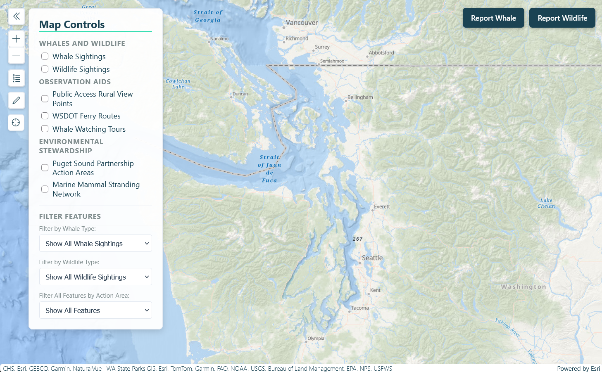
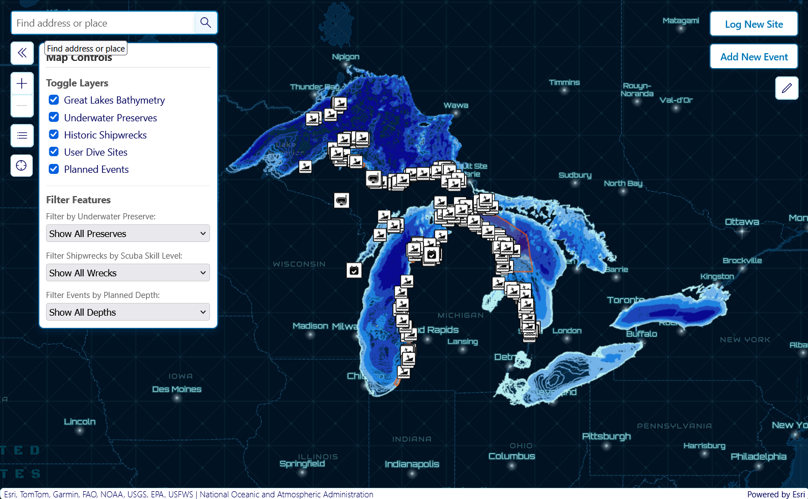
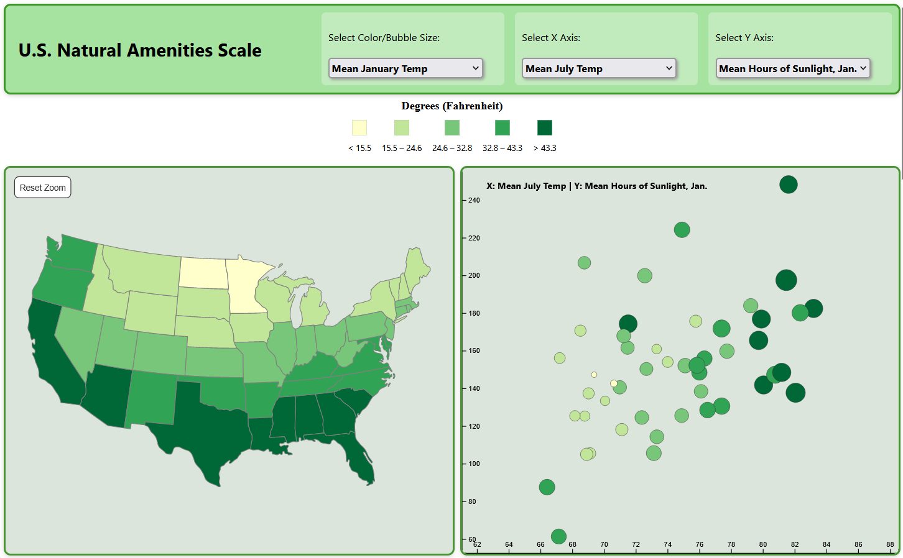
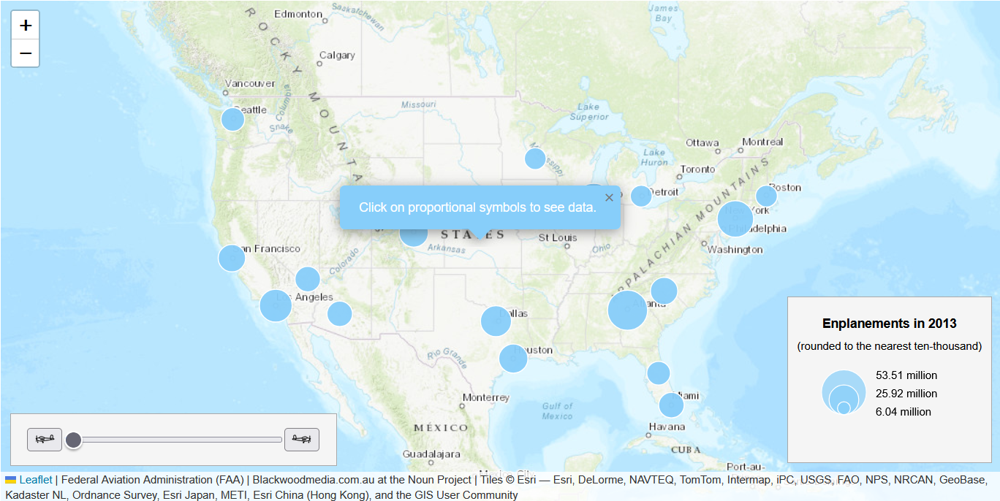
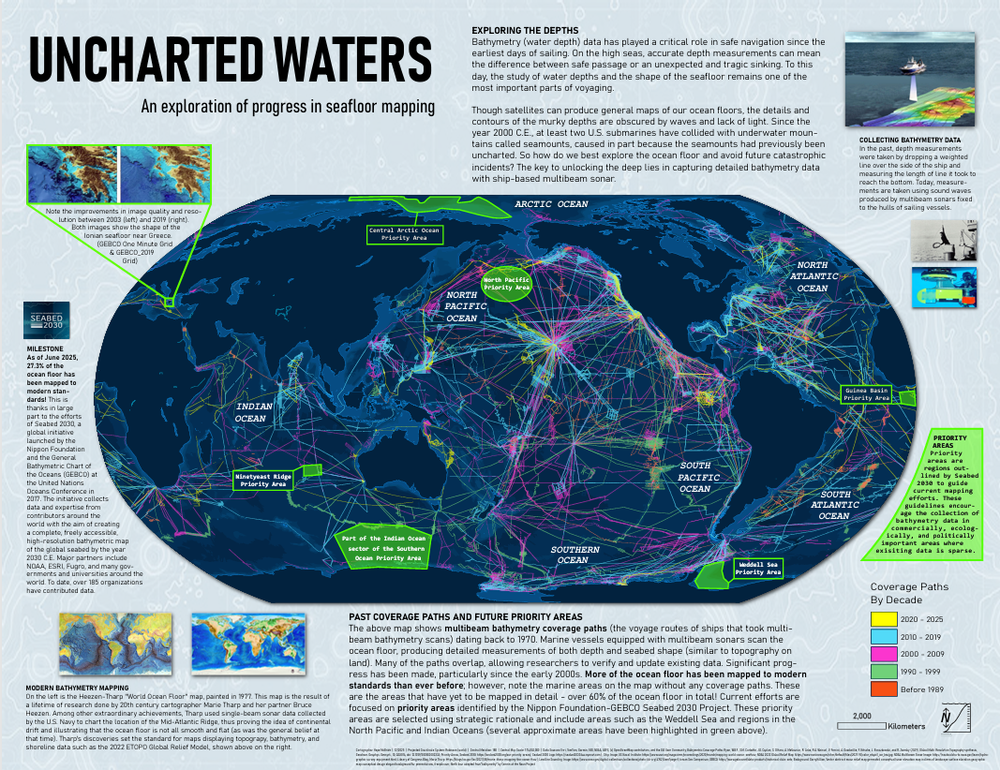
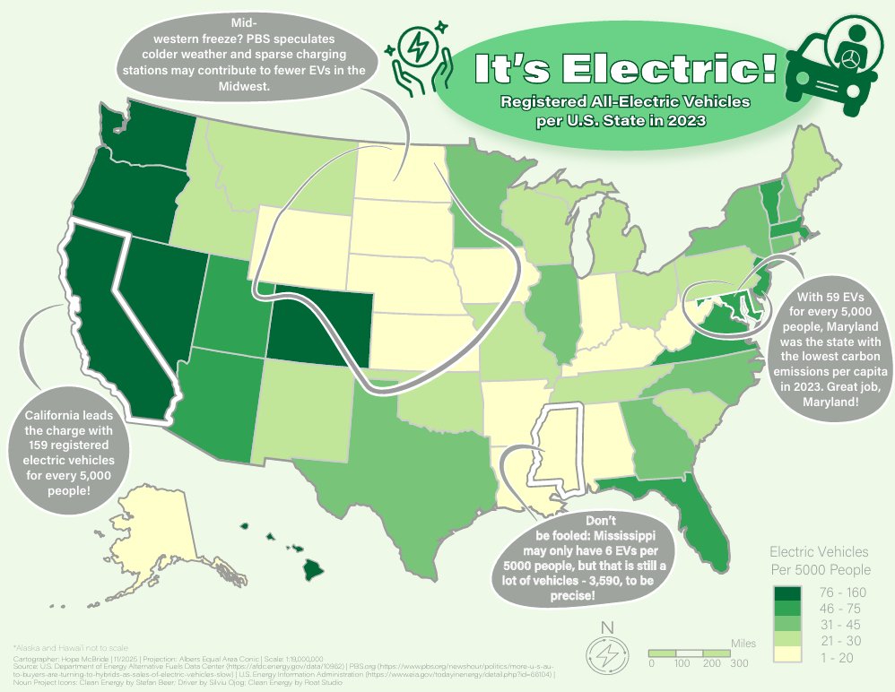
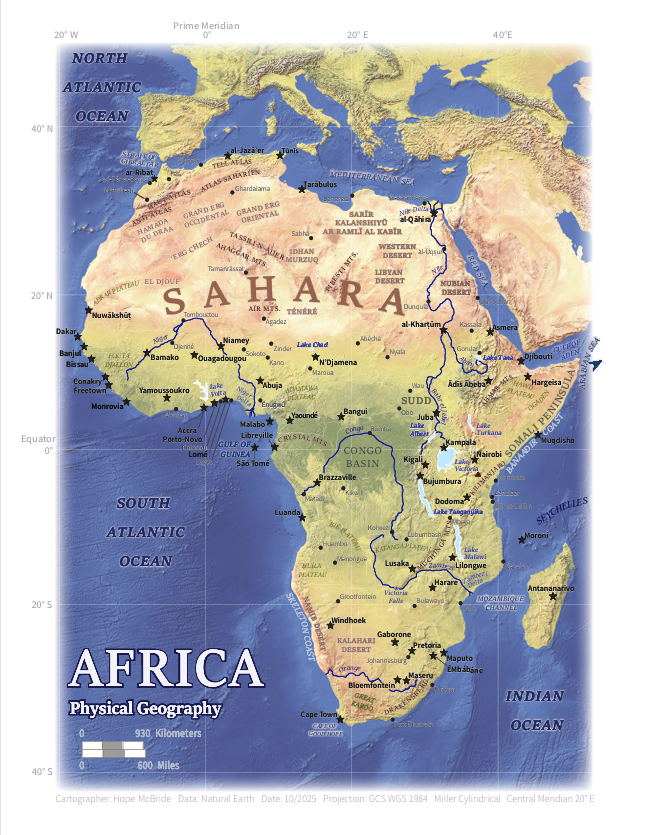
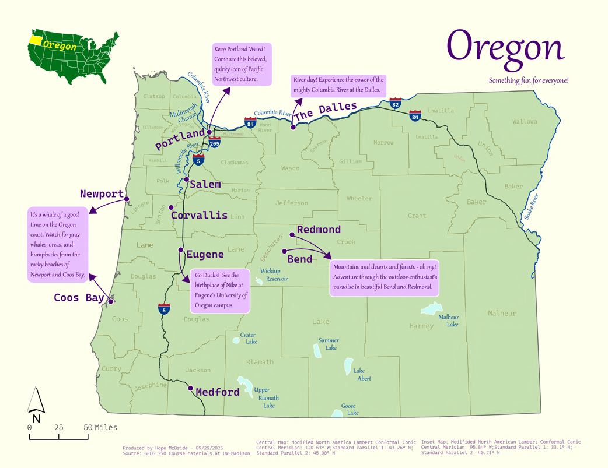

Hope McBride
GIS Developer & Cartographer | M.S. Cartography & GIS
Welcome to my professional portfolio. I specialize in building mobile-first web mapping applications, interactive data dashboards, and precision cartographic layouts that bridge spatial data science with real-world accessibility and utility.
Web GIS & Capstone Projects

ForeignHokkaido
Mobile-first, bilingual web map application centralizing municipal logistics, health services, and seasonal rules for Assistant Language Teachers in southern Hokkaido.

PugetSoundWatch
Full-stack web application tracking crowdsourced wildlife and whale-watching activity to promote environmental stewardship and regional ecotourism.

GoDivePure
Interactive mapping tool for exploring Great Lakes dive sites and logging real-time dive events and underwater conditions with custom spatial forms.
Interactive Web Mapping & D3
AstroJourneys
Museum-quality digital experience exploring the spatiotemporal history and narrative milestones of the U.S. space program.

U.S. Natural Amenities Scale
Multivariate data visualization analyzing how historic natural amenities correlate with regional attractiveness across U.S. states.

Passenger Count Trends
Introductory interactive web map visualizing annual airport embarkation trends and passenger flow dynamics.
Cartographic Design & Print Maps

Uncharted Waters
Informational map poster tracking the historical evolution and hydrographic progression of seafloor mapping. (Award Winner)

It’s Electric Map
Classed choropleth map delivering a convincing statistical graphic argument across 15+ enumeration units.

Africa Reference Map
Detailed physical geography reference map developing label placement skills across 171 distinct geographic features.

Oregon Regional Map
Foundational static regional map utilizing a custom regional color palette inspired by Pacific Northwest landscapes.